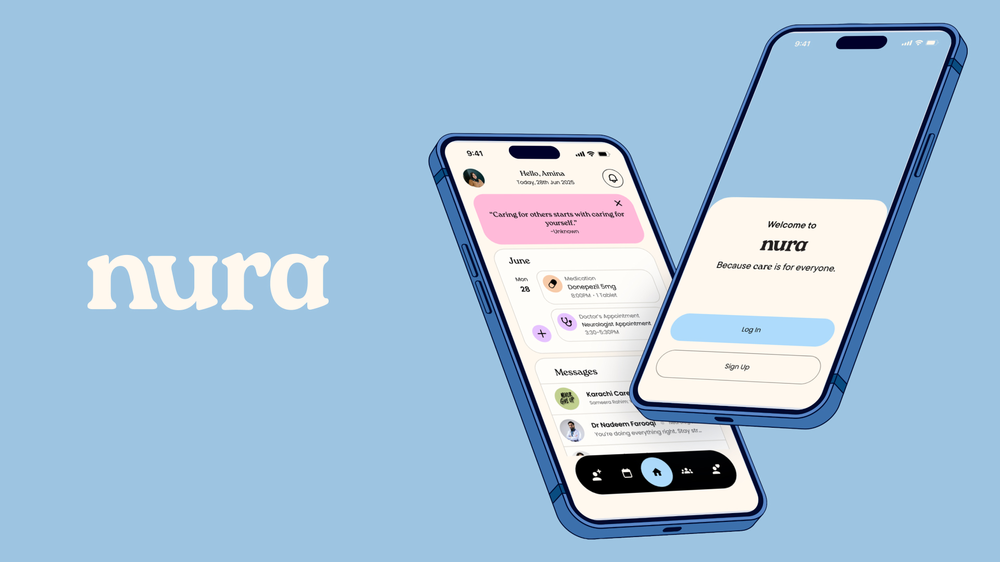

MPS Thesis
Nura
Designing to ease the burden of dementia caregiving

Overview
Nura is a calm companion for families navigating dementia caregiving at home. The daily work of supporting a loved one, tracking routines, managing medications, coordinating with clinicians, and holding space for grief, often falls on one person with tools that were never designed for this kind of care.
I designed Nura to reduce the cognitive load of caregiving without reducing the humanity of it. The interface favors gentle prompts over alerts, shared visibility over solo responsibility, and plain language over clinical jargon, so caregivers can stay present with the person in front of them, not buried in the app.
The Challenge
Care between appointments falls through the cracks.
The hardest part of dementia caregiving isn't the clinic visit, it's the everyday rhythm of monitoring, remembering, and adapting as needs change. Existing tools treated caregivers like data-entry clerks for someone else's health.
Problem framing — care that falls between appointments, not inside them
The monitoring gap
The clinic sees an hour a month. The caregiver holds every other hour, with no tool built to carry that weight between visits.
The caregiver as clerk
Existing apps turned a family member into a data-entry role for someone else's health, logging symptoms instead of living the day.
Built for the wrong person
Every tool pointed its attention at the patient. The person quietly breaking under the load was left out of the design entirely.
Design for the person behind the person.
Every existing tool pointed its attention at the patient, medications taken, symptoms logged, and treated the caregiver as the unpaid clerk entering it all. But the one quietly breaking under the weight wasn't the patient. It was the one keeping track.
The reframe was simple and it changed everything: design for the caregiver's load first, and let the patient's data fall out of a gentler routine, not the other way around.
The reframe — caregiver load first, patient data as a byproduct of a gentler routine
Solution
Soft edges, honest data.
Nura asks for less, more kindly: one tap to log how the day went, a routine that adapts instead of nagging, and a tone that never scolds a missed task. Underneath the calm surface, the data is rigorous: clean enough to bring to a doctor, gentle enough to keep up with.
Product overview — the calm surface over a rigorous data layer
Gentle prompts
One thing to remember at a time, surfaced as a soft prompt rather than an alert stack. Nura asks for less, more kindly.
A routine that adapts
The day's plan flexes with the person instead of nagging. A missed task is met with a next step, never a scold or a broken streak.
Rigorous underneath
Every gentle tap still writes clean, structured data, organized enough to hand a clinician without any extra work from the caregiver.
Design Process
To make this real, I followed one caregiver through an ordinary day.
Morning starts before anyone is ready. Nura surfaces the day's routine as a single gentle prompt, what to remember, not everything at once, so the first hour isn't spent bracing for what might be forgotten.
Morning — the day's routine surfaced as a single gentle prompt
Through the day, medication check-ins arrive as light touches rather than red alarms. A tap confirms what happened; a skip is recorded without judgment, so the record stays honest without adding shame.
Midday — a medication check-in as a light touch, not a red alarm
By evening the work is emotional as much as logistical. One tap logs how the day actually went, and Nura holds that context so nothing has to be carried in someone's head overnight.
Evening — one tap to log how the day actually went
The system is built to lower the temperature.
Rounded forms, generous space, and warm neutrals keep the interface from ever feeling clinical or urgent. Language does as much work as layout, and underneath the calm the data stays rigorous and structured, so what feels gentle to a caregiver is still clean enough to hand to a clinician.
Foundations — type, color, and components tuned to lower the temperature
Rounded, warm forms
Soft corners, generous spacing, and warm neutrals keep every screen from reading as clinical, urgent, or alarming.
Plain, non-judgmental language
No red badges, no streaks to break, no scolding for a missed task. Nura speaks in plain, human terms throughout.
Structured data underneath
The gentle surface sits on a rigorous, structured data layer, clean enough to bring straight to a doctor.
The concept cohered through what I chose to leave out.
Designing for care meant designing for the person behind the person, and most of the hard calls were subtractions, cutting anything that added pressure, noise, or clinical distance.
Caregiver first, patient second
The organizing decision: center the caregiver's load and let the patient's data fall out of a gentler routine.
No alarms, only prompts
Alerts and red badges were cut in favor of soft, single prompts, so the app never raises the temperature of a hard day.
No streaks, no scolding
Gamified consistency was removed. A missed task is met with a next step, never a broken streak or a guilt cue.
Gentle without going soft
Plain language and warm forms sit on top of rigorous, structured data, so kindness never costs clinical usefulness.
Decision framework — every cut chosen to remove pressure, not information
Results
Caregivers called it a companion, not a tracker.
That was the exact shift the project set out to prove.
A companion, not a tracker
The language caregivers reached for changed, from a tool they had to feed to a presence that helped carry the day.
Consistency without pressure
The design made space for the emotional weight of the work, not just the logistics, and held routine without demanding it.
Rigor and gentleness together
Nura became proof that clean, clinical-grade data and a gentle tone don't have to trade off against each other.
Nura became a thesis about care as a design constraint, proof that rigor and gentleness don't have to trade off against each other.
Reflection
The hardest choices were about what to leave out.
Designing for the invisible person
Caring for the caregiver meant designing for needs that are usually invisible in health tools, and trusting that as the primary job.
Restraint as the real work
The strongest moves were subtractions. Deciding what not to build kept Nura calm enough to actually live with.